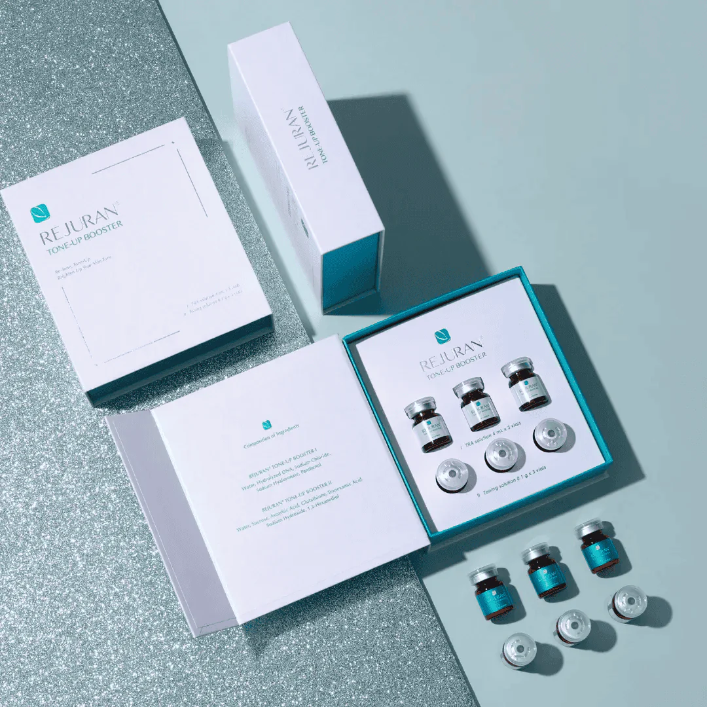

K-Beauty Medspa • Carrollton HQ

The dual-action booster that rebuilds your skin barrier while delivering an unmistakable brightening effect.
Origin
South Korea
Type
Brightening Booster
Purpose
Fades pigmentation, evens skin tone, and restores cellular health.
SuA Glow Perspective
"Brightening is only half the battle. To keep the glow, you must first repair the skin's foundation."
Rejuran® Tone Up Booster leverages salmon DNA (c-PDRN) combined with powerful brightening agents to deliver a dual-action result:
The Result
A visibly clearer, more luminous complexion that feels stronger and more resilient from within.
Rejuran® Tone Up Booster combines 6 high-concentration ingredients designed to work in synergy for maximum efficacy.
The signature regenerative component that triggers deep skin repair and strengthens the barrier.
A proven brightening agent that blocks the formation of melanin and fades persistent dark spots.
The body's master antioxidant that delivers a bright, "inner-light" radiance to the skin.
The Key Difference
Most brightening products only treat the surface or inhibit pigment temporarily. Rejuran® Tone Up Booster uses c-PDRN to heal the skin cells themselves, ensuring that your new, bright skin is healthy and strong enough to maintain its glow without reverting to a dull state.
vs. Topical Vitamin C
Topical serums often oxidize and only reach the surface. Tone Up Booster is delivered directly into the skin, bypassing the barrier for 100% absorption.
vs. Regular Rejuran Healer
Rejuran Healer is focused purely on repair and healing. Tone Up Booster adds specific brightening agents (Tranexamic Acid and Glutathione) to the c-PDRN base.
vs. Laser Toning
Laser treatments break up pigment but can sometimes dry out the skin. Tone Up Booster provides the "fuel" for your skin to recover and brighten concurrently.
vs. Traditional HA Boosters
Standard HA boosters focus only on hydration (the water). Rejuran Tone Up provides hydration plus cellular repair and pigment control.
~45 Minutes
Minimal Downtime
3 Sessions Recommended
Glowing, Even Tone
Sophia's Expert Insight
"Tone Up Booster is a game-changer for clients who want that Korean glass-skin look but also need to strengthen their skin. It's truly a dual-benefit treatment that delivers luminosity without compromising on skin health."
At SuA Glow, we use professional delivery systems (like microneedling or ultrasound) to ensure the booster penetrates deeply into the dermal layers where it can work most effectively.
The procedure is well-tolerated. We apply a topical numbing cream beforehand to ensure your comfort throughout the session.
Most clients notice an improvement in skin radiance and hydration within the first week. For pigmentation and texture, results become more prominent after the second or third session.
Results typically last 4-6 months. We recommend a maintenance session every 3-4 months to keep your skin at its peak luminosity.
K-Beauty Medspa • Carrollton HQ